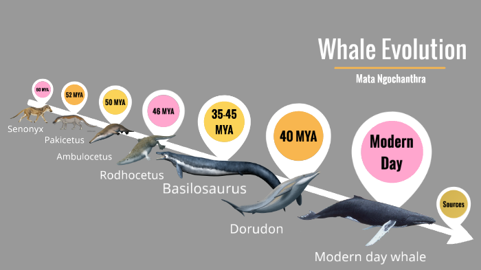

So What is a Whale?
Whales are aquatic marine mammals known as cetaceans, including whales, dolphins, and porpoises. They are warm-blooded, breathe air, and evolved from land-dwelling creatures millions of years ago.

Origin: The Pakicetus (50 Million Years Ago)
The Pakicetus was a wolf-like land mammal with inner ear structures similar to modern whales. It lived near the ancient Tethys Sea, in present-day Pakistan, and is the earliest known whale ancestor.
Ambulocetus: The Walking Whale (47 MYA)
Ambulocetus, meaning "walking whale," lived in both freshwater and saltwater environments. It had legs for walking and a body adapted for swimming — a major step toward aquatic life.
Global Expansion (Around 42 MYA)
Whale ancestors spread across the globe. In 2011, scientists found a four-legged whale fossil in Peru, proving early whales had reached distant parts of the world.
Common Ancestor of Modern Whales (34 MYA)
All modern whales descend from a species that lived around 34 million years ago. It lacked echolocation, limiting its survival compared to its evolved descendants.
Diversification (29–15 MYA)
Whale species began diversifying due to ocean cooling and ecological shifts. Larger whales appeared, eating more and using size as a defense from predators.
The Giants of Today (4.5 MYA–Now)
Whales became enormous, thriving thanks to their size and intelligence. But large size comes with risk — whales today are more vulnerable to extinction due to environmental changes.
Conclusion: The Power of Evolution
In just 50 million years, whales transformed from land mammals to ocean giants. Their history shows how evolution adapts life to survive in changing environments.
